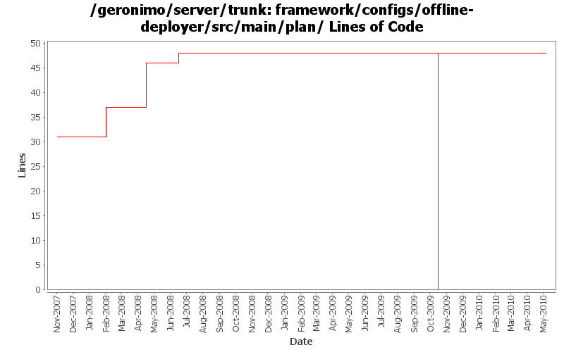

[root]/framework/configs/offline-deployer/src/main/plan

| Author | Changes | Lines of Code | Lines per Change |
|---|---|---|---|
| Totals | 8 (100.0%) | 66 (100.0%) | 8.2 |
| djencks | 4 (50.0%) | 48 (72.7%) | 12.0 |
| dwoods | 1 (12.5%) | 9 (13.6%) | 9.0 |
| vamsic007 | 1 (12.5%) | 6 (9.1%) | 6.0 |
| gawor | 1 (12.5%) | 2 (3.0%) | 2.0 |
| xuhaihong | 1 (12.5%) | 1 (1.5%) | 1.0 |
1. Add some cleanup codes, so that those tmp files are removed once the deployment is finished
2. Update the jarURLWrite name , also enable it by default.
1 lines of code changed in 1 file:
GERONIMO-4916 step 2 move sandbox osgi framework into trunk
48 lines of code changed in 1 file:
GERONIMO-4916 step 1 remove old framwork
0 lines of code changed in 1 file:
load config-substitutions.properties to resolve variables in offline-deployer-config.xml - fixes offline jaxws deployment
2 lines of code changed in 1 file:
GERONIMO-3900 Add runtime support for non-Sun JVMs. Merged in updates from 2.1.1 branch.
9 lines of code changed in 1 file:
GERONIMO-3764 DeployerReaper fails to cleanup the temp directories left behind by deployer
o Offline deployer leaves temporary files behind since using URLs with "jar" protocol locks the jar file and prevents deletion. This is prevented by creating a temporary file when the protocol is "jar".
o This behaviour is controlled using a system property "org.apache.geronimo.deployment.util.DeploymentUtil.jarUrlRewrite" which is false by default, meaning no change from existing behavior for online-deployer.
o Offline deployer sets the system property to true.
o See http://www.mail-archive.com/dev@geronimo.apache.org/msg55811.html
6 lines of code changed in 1 file:
More duplicate plan removal and plan cleanup
0 lines of code changed in 2 files: